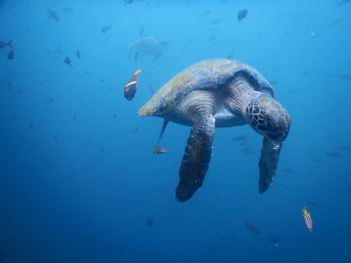

It’s estimated that the fishing industry contributes to the death of thousands to tens of thousands of sea turtles each year. Turtles that become trapped in longlines, gill nets and trawls are thrown away as bycatch. And those that manage to avoid fishing nets are impacted by the disruption to their food supply and habitat.
The impacts of fisheries bycatch are significant. It can lead to population declines and local extinctions of vulnerable species, disrupt marine ecosystems, and pose a threat to biodiversity conservation efforts.
One effective solution to fishery bycatch is the implementation of specialized fishing gear and practices that minimize the unintentional capture of non-target species. Additionally, the adoption of time-area closures and seasonal fishing bans in critical habitats can help protect vulnerable species during sensitive periods.
Every year, sea turtle habitats are destroyed because of shrinking coastlines. Wherever there is boat vessel traffic, whenever a new hotel or high-rise is built up along the shore, and wherever there is sea floor dredging and beach erosion sea turtle food supplies and nesting areas take a major hit.
One solution to mitigate the negative impacts of coastal development is the implementation of sustainable coastal management practices. This involves careful planning and regulation of development activities to minimize harm to coastal ecosystems and communities.
Marine pollution can harm sea turtles in many ways. Plastic pollution, discarded fishing gear, petroleum by-products, and other debris injure sea turtles through ingestion and entanglement. Ocean pollution can also weaken the turtles’ immune systems, and disrupt nesting behavior and hatchling orientation.
Reducing the amount of plastic and other waste entering the ocean through improved recycling programs, waste reduction initiatives, and public awareness campaigns will aid in reducing pollution. Additionally, enforcing stricter regulations on industrial and commercial activities to prevent the discharge of pollutants into water bodies can significantly reduce marine pollution.
We are just now learning the extent to which climate change can affect sea turtles. Climate change can impact the natural sex ratios of hatchlings, increase the likelihood of disease outbreaks, and can escalate the frequency of extreme weather events, which destroy nesting beaches and coral reefs.
Promoting energy efficiency and conservation practices can help reduce the overall demand for energy. Implementing policies and regulations that encourage the adoption of clean technologies and incentivize sustainable practices across industries is also essential.
Throughout the world, turtles are killed and traded on the global market as exotic food, oil, leather, and jewelry. Over the past 100 years, millions of hawkbill turtles alone have been killed just for the price of their shells. And even though today the global trade of luxury and craft items has reduced thanks to conservation efforts, it still remains an ongoing threat to turtles in parts of Africa, Asia and the Americas.
Establishing protected areas and nesting sites where turtles can safely lay their eggs and ensuring their habitats are well-managed and protected can help reduce poaching. Strengthening patrols and increasing surveillance in vulnerable areas can help deter poachers and apprehend those involved in the illegal trade of turtles and their products.